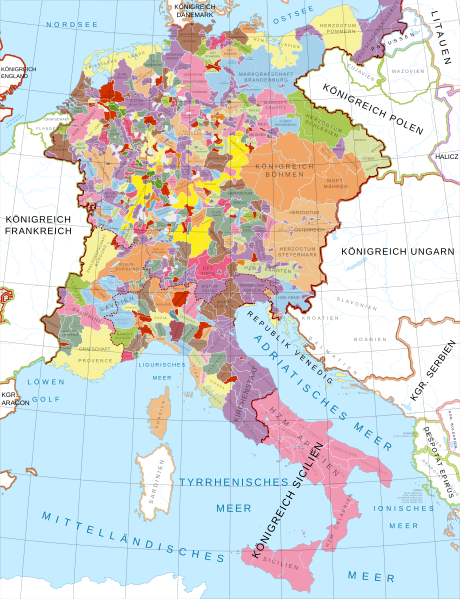

Government
At this point in history, most places were ruled by states, most not very large.States usually had a ruler or ruling class, which made laws, enforced taxes, etc, clear borders, and control over those borders. Some examples would be: Saxony, Bavaria, Brandenburg, etc. Nations are usually a group of people that see themselves to be united in some sort of way.These often go together to form a Nation-State, or a state whose borders are defined by the location of a group of united people.
In the Holy Roman Empire, there were 7 electors, which selected the emperor for the whole empire. In order to win the election, most of the emperors had to bribe the electors, meaning some started off in debt .The Holy Roman Empire was often very messy, as there were different claims from different emperors and kings as emperors, which caused multiple wars. For example, Charles 1 of Spain and Francis 1 of France fought 4 wars over their claim over the role of Holy Roman Emperor.
AlphathonMitteleuropa zur Zeit der Staufer .2018.Wikimedia,https://commons.wikimedia.org/wiki/File:Mitteleuropa_zur_Zeit_der_Staufer.svg